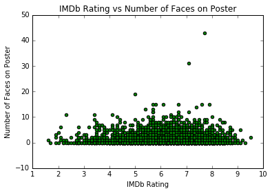

CS 109A/STAT 121A: Predicting Movie Success
Nicholas Tarantino
Elizabeth Yemane
Motivation
It is notoriously difficult to predict the success of a film. From summer blockbusters that make hundreds of millions of dollars to flops that fail to recuperate more than a small percentage of the money spent on production, the performance of movies varies wildly. We aim to create a model to predict box office revenue based on various predictors from genre to the number of faces in a movie poster. During this process, we hope to gain some insight into the factors that most influence a movie’s success.
The data we used is from a Kaggle dataset. The information for 5043 movies was scrapped from the IMDb website, spanning across 100 years in 66 countries. The 28 variables are as follows:
|
|
|
*As seen above, the Kaggle dataset includes multiple variables pulled from Facebook. These variables may prove to be important for the analysis for more recent movies. However, the Facebook data will be irrelevant for movies that were produced prior to Facebook’s inception.
Data Exploration
Visualizations of a sample of the predictors

|
||
|  |
Figure 1 provides us with an interesting summary of how a film’s gross revenue varies with IMDb score. A film’s IMDb score is essentially a measure of its public critical reception. Intuition would suggest that films that are more well received by the public by having a higher IMDB score would gross more revenue as more people will want to see those films. In general, our plot shows that this trend is certainly present. However, there are plenty of highly rated films that do not make much money.
The correlation coefficient between IMDb Score and Gross Revenue is 0.215, showing that the two are not very correlated. We decided to use Gross Revenue as our response variable because of how we interpreted the initial question. A different framing would have used IMDb scores as the y variable, resulting in a different final model.
Cleaning The Data
Initially, when we encoded the dataset for categorical variables, the dataset contained over 20,000 predictors. Initial models took a really long time to run, and the models were overfitting on many training datasets. We felt that the information provided by the plot keywords variable was more simply encoded in the genre variable, so we dropped the keywords from the dataset. This brought our dataset down to 13,000 variables.
Additionally, we dropped approximately 800 rows from our dataset because these rows did not contain information for the response variable, Gross Revenue, and we did not want to arbitrarily impute this data.
Finally, we imputed missing data using the median of each column. As most of our data is categorical in nature, this was a wise decision. For example, the median for a column indicating the presence of an actor in a movie is likely to be 0 as said actor will be in less movies than not. Then, the assumption that said actor is not in a movie for which we do not have this information is likely correct. For numerical data, this strategy mitigates the effect extreme data would have on the mean.
Final Model
Random forest with reduced dimensionality via PCA
We initially investigated four different types of models - linear regression, lasso regression, ridge regression, and regression trees. Fitting models on our unreduced dataset took a long time, and results varied greatly, as seen below.
Clearly, we had to reduce dimensionality. We concluded that 20 components were appropriate to use for Principal Component Analysis.

Then, we fit many models using the different model types discussed above. As shown below, regression trees provided a slightly higher mean with less variability, while standard linear regression and its regularized counterparts gave indistinguishable results.
Using different regularization parameters for lasso and ridge regression reveals that there is no real benefit for the regularized models compared to standard linear regression.
We proceeded with regression trees, finding that R2 value testing data was maximized at a depth of 6.
This model gave an R2 value of 0.72 for the full dataset and a value of 0.57 on testing data. This is our best model so far, but we proceed to see if random forests can perform better.
Random forests seem to consistently perform better than a single regression tree, so we try to optimize the parameters for the forest to get a final model.
The above results lead us to arrive at our final model - a random forest with max depth of 26 using 20 features and 36 trees. The R^2 value for the full dataset is approximately 0.87 and the value for the testing data is approximately 0.69. These results are by far the best found in our evaluation of different models.
Conclusion
The biggest challenge in building a model based on our dataset was handling the sheer size of the data. Dimensionality reduction was a necessity, as running models on the full dataset was slow and ineffective. PCA proved to be a valuable resource here, and robust regression trees provided us with a model that did a fairly good job at predicting box office success.
Using a basic linear regression model, we found the following factors to have the largest effect on revenue:
As you can see, most of these factors are just movie titles. This makes sense as movie titles are unique, so if a particular movie has high revenue, this unique title is likely to be given a lot of weight. To gain further insight, we removed the title data and performed the same analysis.
Interestingly, actor names are very influential here, with Korean actors particularly emphasized. The uniqueness discussed above likely plays a similar role here.
Unfortunately, we cannot get the same level of interpretability from our final random forest model due to the use of PCA and the nature of decision trees, but we still arrive at a model exceptional at performing a quite difficult task.
The biggest absolute errors are found when predicting revenue for Avatar, Pirates of the Caribbean: At World's End, Spectre, The Dark Knight Rises, John Carter, Spider-Man 3, Tangled, Avengers: Age of Ultron, Harry Potter and the Half-Blood Prince. We see that our biggest errors are when predicting movies that make quite a bit of money. This makes sense, as the average movie makes less. Next steps would be to identify what causes these errors and make relevant improvements.
Ultimately, our model showcases the immense power of random forests, and it is a great first step towards solving an exceptionally difficult problem.